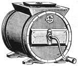

Illustrations from the 1895 MONTGOMERY WARD CATALOG
as reprinted by Dover Publications.
Coffee Spice and Drug Mills.
By IRA SMITH
OK . . . so you've finally made the break. You worked and saved and sold everything you didn't need and borrowed and finally got enough together to buy that farm you'd been dreaming about. You've gotten through the first winter, the crops are planted, the cow's giving milk regularly and everything's fine. It looks like you're going to make it . . . And then the old John Deere breaks down and the barn roof starts to leak and your lady wants that new loom more than anything and the one thing you don't have is plain ol' hard cash money. The farm is nowhere near being a financial success and, besides, you aren't doing it for the money anyway and you can't-get a job and run the farm and, besides that, you need the money now, not next month and just how are you going to take care of those unexpected expenses?
Fear not! There is, indeed, a way that works for many others and that just might work for you.
BE A PICKER
Picking is the art of buying antiques from auctions and sales and people and selling them at a profit to antique shops. People who do this are known as pickers.
Antique shops have to get their merchandise somewhere, and while some dealers make the rounds of auctions and sales, there are many others who can't because they don't have the time or they're little old ladies or they don't have a truck or whatever. Even those dealers who do go to auctions and sales can't go to them all. If you're clever, you can even buy at an auction a dealer attends and turn around and sell him the very thing he bid on earlier. More about that later.
To get started on the road to fame and fortune as a picker, all you need is a little capital. And it can really be a little. You can start with five dollars . . . maybe even less if You're really clever. While it helps to have a truck or a station wagon, it isn't absolutely essential.
If all you have is an old VW or a bike or feet, then you can limit yourself to dealing in small antiques-jewelry, lamps, glass, china, silver, old bottles, stuff like that. In fact, it helps to have a specialty. If you get to know a particular field extremely well, not only will you probably do better at buying, but shop owners will come to respect and trust you for your expertise in that area.
Incidentally, in that last sentence, there was a very important word. Trust. The people you deal with must be able to trust you. Don't rip anybody off ever for any reason. The antique business is an easy business to be dishonest in. There are plenty of temptingly gullible folks and plenty of downright despicable people who maybe deserve being ripped off . . . but don't do it anyway. There are already enough rip-offs in the antique business. Of course, there's no harm in learning to be an uncommonly clever horse trader. That's part of the game.
It's not necessary to be an antiques expert to be a successful picker, but a little basic knowledge is essential and, at the end of this article is a list of books which will help. Most of them cost more than they're worth, but the local library is bound to have some of them. Study the books carefully until you know one style and one period from another. Shouldn't take more than an evening or two.
The next step is to go around to all the antique shops you can find within whatever radius you feel you can cover. Those in larger towns and cities generally will pay more for antiques than small town shops. But not always. That's one of the reasons you have to go look for yourself.
When you go into a shop, take your time and survey the stock carefully. Tell the man (or lady) that you're just looking (the pitch comes later). See if they seem to specialize in any particular items. Be careful, though . . . a lot of something might mean that the dealer bought unwisely and got stuck with unsalable merchandise. You'll find that out later.
Look over the shop's prices, and try to memorize them in general terms. (A note of caution at this point: If there are no prices marked on anything, it means one of two things. Either it's the sort of shop that's so expensive and the clientele so well off that nobody mentions price before deciding-which is a good thing for you, because it generally means that they pay proportionally well for things-or it's a shop that sizes up the customer and decides how much he can pay before telling him the price.)
If the shop falls into the latter category, it's probably a good idea to steer clear of it on general principles. A man who does business that way is obviously a much better horse trader than you at this point, and will do everything he can to convince you that whatever you try to sell him isn't worth what you paid for it . . . but because he likes you and hates to see a newcomer get burned, he'll take it off your hands for just what it cost you.
Sausage Stuffer, Fruit and LardPress Combined.
The Blanchard Butter Mold.
Anyway, look over the prices, bearing in mind that the shop owner will generally pay about 50%-70% of his selling price to buy an article. You're going to have to be able to buy it at about half of that smaller figure in order to make a decent profit. Don't worry though, it's pretty easy to do. I did it. 500% markups aren't uncommon in the antique business.
Along about this time, you can wander over to the owner or proprietor and engage him in some friendly and pleasant conversation. Talk around to finding out what he has the most demand for, what sort of things he has a hard time getting and-most important-what sort of things there's no market for at all. (Another digression at this point: the market for antiques fluctuates with all the certainty of hemlines and prices are in direct proportion to popularity. Scarcity also has a lot to do with price, but not consistantly so. If Woman's Day comes out with an article on a particular thing, the price is sure to go up within a month.)
Prices also drop, but for reasons I can never understand. I remember once the bottom fell out of the market for pressed glass tumblers. Tumblers that had been selling for 7-10 dollars could be bought for a dollar or so. I bought up all I could find and cleaned up a year later when the market rose again.
Once you've been dealing awhile and know what you're doing and have a little spare capital, you can buy up things that are down in price-or if you're really confident and daring, things which have never been popular but which you feel will be soon-and hold on to them until the market rises. There's not as much risk in this as it might seem, for antiques never get any less scarce, and prices are bound to rise sooner or later. The only problem is how later? At this point in your career, though, it's probably best not to mess with long-term investments.
Now, back to the shop where you've been chatting with the shopkeeper. At some point in the conversation, tell him you're a dealer (it sounds better than picker), and that you just might be able to supply him with some of the things he needs. Telling him that you're a dealer will also enable you to buy things from him at greatly reduced prices*. It is, incidentally, possible to buy an item from one of your shops and sell it at a profit to another. We'll get into that a little later on.
If the shopkeeper seems interested, find out more specifically what he wants to buy and tactfully ask him the sort of prices he's willing to pay. Once you've learned what you need to know, have some excuse to be on your way because antique dealers can be notoriously long-winded on fairly trivial matters and-unless you've got nothing better to do-you can waste an amazing amount of time being a polite audience. As soon as you can leave, write down all you've learned in your handy pocket notebook or else it's going to get mighty confusing along about the fifth shop.
Now we'll get down to the business of where to buy antiques and how. Most of your purchases will be from four sources: auctions, private sales, individuals and other antique shops. Since the matter of buying from one dealer and selling to another has already been mentioned, we'll start there.
Generally speaking, three factors govern the way an antique dealer prices his merchandise: how much he paid for it; how much he knows about it; and whether or not he likes it. Which means that there is certainly no serious standard of antique pricing. As you get to know the various antique shops in your area (and their proprietors), you'll learn where their heads are in terms of pricing. Since there is usually surprisingly little communication between antique shops, and since nobody can keep track of all the merchandise that a competing dealer has, you'll occasionally discover that Ye Olde Mill Antique Shoppe has an item that you can buy for five dollars and for which Grandmother's Attic & Emporium will gladly pay ten dollars. You buy (or trade) it from the first one and sell it to the second. Simple as that.
Sooner or later, you're bound to come across someone who has an antique that he wants to sell. Or someone who has something that he never thought of selling and probably doesn't realize is an antique but which you know you can turn a little profit on if you can get him to part with at the right price.
Now, buying from individuals can be a tricky matter. The first thing to remember is to be honest and fair in your dealings. Don't try to rip anybody off. I realize that I shouldn't belabor this point because all of MOTHER's readers are fine, upstanding, honest and gentle folk . . . but just in case there's a predator out there, some mention of honesty should be made. Chances are that the individual you'll be buying from is one of your neighbors, and if you con him (or her) out of a family heirloom, you'll have to answer for it sooner or later. So keep it straight as you go.
The primary difficulty in buying from an individual is in agreeing on a fair price. Whenever you can, don't make the first offer. Ask the seller how much he wants for whatever he's selling. That way, if someone comes along after you've bought the object and tells the seller that the price was not nearly enough, he can't blame you for not offering a fair price. It was his price.
Of course, if someone offers you a rare art glass vase for two dollars, and you know that you can get two hundred for it, you'd dang well better offer the individual more for the vase. And not just five dollars, either. Let him share in the good fortune. You'll sleep a lot better for it.
That sort of thing won't happen very often, though. More often than not, people overestimate the value of a family heirloom. If the price they ask is too high, decide what you should pay for the item in question and make them an offer. If they refuse, a little haggling is OK but don't tell them how little the thing is worth . . . you'll only make them unhappy. Just tell them you're sorry, but that your price is all you can afford to pay, and let it go at that.
A technique that sometimes works well in buying from an individual, particularly when the item you want is something that is still in daily use (or disuse) and which has no sentimental value, is the "new lamps for old" method. For instance, if the item you want is a rare Model FF Leica that somebody brought back from the war (the big one, in '44) and that nobody knows how to use . . . the owner just might swap the Leica for a new Instamatic which would be of more use to him. And all parties involved will feel they got the best of the trade.
Of course, the foregoing example is highly unlikely, and was used purely for illustrative purposes. A more reasonable example might be to exchange a new stainless steel mixing bowl for a piece of early Bennington ware. Anyway, I'm sure you get the idea.
Private sales usually aren't worth bothering with, but they deserve a little mention before going on to your major source, auctions. When someone wants to sell all or most of a houseful of stuff and is afraid to have an auction, they'll often hold a private sale. Professional sale managers usually come in, price things and run these private sales for a percentage of the take. With people like that, your chances of finding a bargain are practically nonexistant. Still, there is a chance. If you can get to a private sale early, and have nothing else to do, it's worth a try.
Occasionally, someone will try to do a private sale without the help of professional managers, and if you find one of these your chances of picking up something you can sell at a profit are pretty good. Again, get there as soon as the sale is scheduled to start, because you're not the only one trying to buy bargains.
Auctions will be your best source of resalable antiques. They're also the most dangerous. Nowhere else is it as easy to spend good money on worthless junk that you don't want or need. Believe me, I know.
Essentially, there are two kinds of auctions: (1) farm or household auctions and (2) auction house auctions. Forget the second kind. They always sound good, but I never can get a good buy at one.
To find out where and when auctions are being held, check the local papers in the areas you intend to cover. Most auctions are held on Saturday or Sunday and are usually advertised on Wednesday. Occasionally you'll find a mid-week auction, and these have the most potential for good buys because the crowds are smaller (lots of people work during the day, remember?)
Deciding on which auction to attend will probably be a matter of chance at first. Try to attend auctions held by all the auctioneers in your area. Once you get to know the auctioneers, you'll know which auctions are most likely to be worthwhile.
By trial and error (mostly error) I've formulated a set of successful auction buying rules and techniques which I will herewith set down, absolutely free for nothing without cost or obligation and out of the pure noble goodness of my generous heart.
Make it a point to get to the auction at least a half-hour before the auction is scheduled to start. This gives you a chance to carefully look over all items before the sale begins. Make note of the things in which you're interested and decide the top price you'll pay for each item. Since this is probably the most important rule of successful auction buying I will say it again.
Decide beforehand what you will pay for an item and stick to it. It can be disasterously easy to get caught up in the excitement of bidding and pay far more than an item is worth. I once watched two ladies-both antique dealers-run a dimestore ceramic rabbit up to eleven dollars. Even though the audience had begun laughing, they kept right on bidding. So watch out!
Never make the mistake of buying something you don't really need or want just because it's cheap. Of course, if the item is really outrageously inexpensive, you can probably sell it to someone at a profit. But be careful. I remember the time I bought a monstrous old chicken brooder for 10 cents. The brooder was certainly cheap enough . . . but at the time I lived in town, didn't keep chickens, didn't intend to keep chickens, didn't know anybody who did keep chickens and didn't even particularly like chicken.
Then there was the five piece set of horsehair parlor furniture for a dollar which I later found was home to a good many mice. Or the horse-drawn farm wagon which I bought for a mere three dollars and which I had to tow home behind my car at five miles an hour. For 30 miles. Not to mention the 50 cent sheep . . . but that's another story.
It's not necessary to be secretive about bidding. Everybody's got this dumb idea that you have to be anonymous and sneaky when you're bidding. Horse puckies! I've found that the best spot at an auction is right up front, as close to the auctioneer as possible. That way you can see exactly what it is that's being sold.
It's amazing how many people bid on things (or miss bidding on things) that they can't see. I've been at auctions which were overrun with dealers, all of whom missed at least one good buy because they couldn't see in detail what they were bidding on. When this happens, you can frequently sell your purchase at a profit before you even leave the sale.
Improved Cedar Cylinder Churn.
More on being up front: Stay as close to the auctioneer as possible. Farm auctions are frequently conducted from the front porch of the house. Get right up there by or on the porch steps. This has a number of advantages in addition to visibility. By being close to the auctioneer, you have a good chance of making friends with him after a few sales (laugh at his jokes, be a good ol' boy). Once the auctioneer gets to know you, he'll sometimes quickly knock down an article to you that he knows you want badly. But never ask him to. You'll blow it forever. If he does it himself, OK. Otherwise forget it.
Being up front also gives you the advantage of being able to face the audience. You can see just who is bidding against you . . . and they can see you . . . and all this can be used to your advantage.
For instance, if you're big and ugly, you can try glaring at others to intimidate them out of bidding. Or if you're sort of freaky looking, you can play the role of the local fool and get some sneaky bidding in while nobody is taking you seriously. Or if you sense that people are bidding against you out of spite because you're weird, you can make virtually imperceptible bids that only the auctioneer can see. Auctions are really a game, you see, and if you don't take them too seriously, they can be grand entertainment. Half the fun, (and success) in fact, lies in learning to play the game well.
Here are a few final handy pieces of information about auction buying. If bidding seems to be generally too high for what the merchandise is worth, don't waste time waiting around for a good buy. Sometimes auctions run this way. Go find another auction.
If you have a choice between two auctions, one of which offers a good many antiques and the other listing only a few, choose the latter. Most of the dealers and collectors will be at the first one.
Picture frames are always desirable items at an auction. However, nobody seems to care much about what's in the frame. Let somebody else buy the frame and you can frequently talk them out of whatever's in it for little or nothing (assuming that you want whatever's in the frame).
At farm auctions, there are always things which come up that won't even bring the minimum bid (usually 25 cents). When this happens, the auctioneer will put it aside and go on, adding no-bid items to the pile as he goes. Every once in awhile, he'll bring the whole stock up for bid. It doesn't often bring much, if anything, because nobody wants to cart all that junk home. But if you're close to the auctioneer, you may see repairable things or something vaguely useful in these piles. Besides, if you buy the junk, you'll be a little further on the way into the good graces of the auctioneer.
A usual side benefit of farm auctions is the food that's generally provided by the local Ladies' Church Society. The pies are fantastic and there's nothing quite like the feeling of sitting there in the shade eating a big piece of home made cherry pie, listening to that old auctioneer and thinking about all the antique picking you're going to do.
Once you've gone out and bought a few things, your next step is to sell them to one or more of your shops. If time is no problem, you might even consider refinishing a few of the items. It's not hard to learn (MOTHER NO. 6, LIVING THE GOOD LIFE), and a good refinishing job can greatly increase the value and salability of an antique. Many shopkeepers haven't the time nor the desire to do their own repair and refinishing. And many of those who do restoration work don't do it very well. And thereby hangs a brief digression:
If you really want to get into the antiques thing, it would well warrant the time spent learning to do really fine, old-timey craftsman-type repair and refinishing. I'm not saying that it's necessary for you to refinish everything in order to be able to sell it. In fact, knowing when not to refinish can be one of the most important things of all. But if a few hours work can mean that you get fifty dollars for that chest instead of five, it's at least worth your consideration. If you decide to do it though, do it well. I've seen an unpleasant number of first-rate antiques messed up with third-rate work.
If you don't refinish, at least clean your antiques well before setting out to peddle them. Just taking off the years of dirt can make quite a difference in the appearance and, consequently, in the salability of antiques.
The last step on your road to untold riches is to sell at a profit those things which you buy. If you've learned your shops well, you should have no trouble.
Never try to rush a sale. Chat with the shopkeeper a bit, then tell him that you picked up a few things the other day that might interest him. The sale will usually take care of itself from there on . . . if you've learned your shops well.
Frequently the dealer will tell you that your price is high, that the merchandise isn't worth much, that such and such isn't a very good piece or isn't in good shape. Don't be put off by this sort of thing. A little haggling is in order, and by turning it into a game of wits (like auctions), it can become an enjoyable part of the procedure.
What do you do if you can't sell something? Take it home and use it. You can try to sell it again in a few weeks or months. The market changes often, and sooner or later there'll be a buyer for whatever you have. In the meantime, enjoy it. This is one of the fringe benefits of being a picker. You can furnish your place with antiques and by selling whatever there is a current market for, your decor never becomes monotonous. How many other people can afford to redecorate with fine antiques every few months?
On selling antiques to friends: if you can't resist the universal temptation to sell things to your friends at cost, sooner or later everyone is going to be your friend. Matter of fact, you'll slowly starve to death surrounded by friends. Remember that you've invested your time, skill, capital and transportation in these antiques. It's essential that you recoup your investment in order to survive. If you explain it to your friends that way your real friends will understand. Besides, if you give them a dealer's price, they'll still be buying from you for far less than they'd pay in a shop.
Happy pickin'.
HERE'S THAT LIST OF USEFUL BOOKS ON ANTIQUES:
AMERICAN COUNTRY FURNITURE 1780-1875
Ralph and Terry Kovel
Crown Publishing
THE ANTIQUES BOOK
Alice Winchester
Bonanza Books
FIELD GUIDE TO EARLY AMERICAN FURNITURE*
Thomas H. Ormsbee
Bonanza Books
FIELD GUIDE TO AMERICAN VICTORIAN FURNITURE
Thomas H. Ormsbee
Bonanza Books
THE CARE AND REPAIR OF ANTIQUES
Thomas H. Ormsbee
Grammercy Publishing
THE EASY EXPERT IN COLLECTING AND RESTORING AMERICAN ANTIQUES
Moreton Marsh J. B.
Lippincott and Co.
AMERICAN HERITAGE HISTORY OF AMERICAN ANTIQUES
American Heritage
PRICE GUIDE TO PATTERN GLASS
EARLY AMERICAN PRESSED GLASS
EARLY AMERICAN PRESSED GLASS HANDBOOK
SANDWICH GLASS
SANDWICH GLASS HANDBOOK
VICTORIAN GLASS
VICTORIAN GLASS HANDBOOK
19th CENTURY Y ART GLASS
ANTIQUE FAKES AND REPRODUCTIONS
All by Ruth Webb Lee (THE authority on American Glass)
M. Barrows and Co.
FURNITURE TREASURY (3 vols.)
Wallace Nutting
MacMillan Publishing
(5,000 photographs of every imaginable style of antique furniture)
OLD CLOCKS AND WATCHES AND THEIR MAKERS
Frederick James Britten
*FOOTNOTE TO BOOK LIST: These field guides as well as some of Ruth Webb Lee's books have price lists in them. Disregard the prices Since these books were published in the early 60's, the prices have gone up considerably. Besides, the prices in those books were never very valid to begin with. You just can't place a fixed price on antiques.
The book list is far from complete. It'll do to get you started, though. Once you get to the library, you'll discover all the other great books that I've forgotten to mention.
*This digression comes in the form of a footnote because if it came in the middle of the article, you'd probably forget what I was writing about by the time you got to the end of it.
Here's an invaluable tip for anyone interested in (A) antiques (B) saving money (C) getting a bit of a break nn income taxes . . . which should cover just about everybody. Run right out and get yourself a sales tax license and whatever other licensing might be necessary to operate an antique shop. (Doesn't cost much . . . when I was dealing back home, all you needed was a sales tax license which cost two dollars and was good forever).
Now, when you go into an antique shop, tell them you're a dealer and that you have a shop of your own . . . and you'll find yourself getting from 20% to 60% off on whatever you buy. Also, since you're now officially an antique dealer operating a business out of your home, you can legally deduct a percentage (whatever percent of your home is given over to business purposes . . . I always figure 50%) of your rent or mortgage payment, automobile expenses (including purchase price if you buy one after you get your business papers), utilities, telephone, etc. as business expenses. And if your expenses are more than your income (which somehow almost always happens) you can write off as big chunk as a business loss. Bigger businesses than us do this, so it must be OK. Or so my income tax man always told me...
|
 56869 This we consider by far the best small, cheap churn on the market It is made from the best Virginia cedar; it has a double dasher and the crank is locked to the churn with a clamp and thumbscrew, which presents leakage. Lock cannot break. The top is large and dasher easily removed. The hoops are of galvanized iron and will not rust. |
|
|